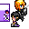

戻る

No.39 - Ⅰ is WORLD Ver2.0
投票ポイント
総合部門：
59 pt
これはひどい部門：
3 pt
熱中部門：
10 pt
技術部門：
5 pt
シナリオ部門：
11 pt
ワロス部門：
5 pt
演出部門：
8 pt
遊びやすさ部門：
5 pt
斬新部門：
7 pt
いやらしさ部門：
5 pt
投票数：
13
投票コメント
HN: age:20~29 sex:♂
豊富なVIPRPGのキャラクターが登場し、人間が死滅した絶望の世界で仲間を見つけ出すRPG
VIPRPGには少なめのシリアスな世界観で楽しめました
魔法具現化を中心にしたキャラクターを大切に扱っており、10を越える仲間がいるにも関わらず会話イベントが丁寧に作られています(仲間キャラのいるいないで差分まである！)
EXPを自由に振り分けられるシステムもお気に入りのキャラに愛着が湧くよい仕様だと思います
フリーシナリオ要素もあり隠された仲間やエンチャントを探すのも楽しいです
たまにある進行に関わるなバグ(現在はだいたい修正済み)や不安定なゲームバランスなど荒削りな面は否めませんが、プレイ時間も10時間近くに及ぶ大ボリュームで熱意のある良作です
HN: age:20~29 sex:
シリアスでキャラも生き生き、好き
完結じっくりお待ちします
HN:ないとう age:0~9 sex:♂
2000の顔倉をそのままMV規格にしても違和感のないヌルヌルにする技術が気になる
HN: age: sex:
見るげ部分は人を選びつつも面白さはあるが、やるゲ部分は改善点が多い
1章の難易度引き下げやエンカウント緩和などはユーザーの声を聞くべきだし、2章も難易度引き下げやエンカウント緩和などの改革が必要
通しプレイすらしてないのも丸分かりなバグが多く、出くわすと萎えるのでせめて2回ぐらい自分でクリアしてから提出した方が良い
HN: age: sex:
ver1はハートブレイクなプレイ感から中断、ver2はNewGame
移動が高速化しエンカウントが緩和されグリモールジョギング大会も中止になるなど改良で遊びやすくなった
1章も2章も序盤は消耗するが育成で飛躍的に強くなるので中盤以降は易化するインフレバランス
エンチャント特性の倍率が激しいので育成が楽しい反面、ゲームバランスは大味
Ⅰ魔法メイン（次章では網羅？）で加入自由のキャラが多くセリフの差分が細かいので魔法具現化好きなら楽しめるだろう
HN:眠い age: sex:
Ｈなバースティ達はいいと思います
HN:古典主義 age:40~49 sex:♂
バグが多い、誤字が多い…そんな事は些細な事。
このゲームは熱い！
どこが熱いかって？やればわかるさ！
HN: age: sex:
VXACEで良かった気もするけど良作
HN:ぽぽぽ age: sex:♀
大所帯なダークファンタジーＲＰＧで、世紀末の世界で可愛い少年少女たちが奮闘する作品です。
シリアス展開の面白さに加え、加入状況により異なるテキストの詳細な差分がありキャラゲーとしての完成度も高いです。
レベルアップシステムのフォントの違いや爆弾製造など、この作者さんでしか見られないアイデアも面白いです。
戻る

59 pt
これはひどい部門：
3 pt
熱中部門：
10 pt
技術部門：
5 pt
シナリオ部門：
11 pt
ワロス部門：
5 pt
演出部門：
8 pt
遊びやすさ部門：
5 pt
斬新部門：
7 pt
いやらしさ部門：
5 pt
投票数：
13